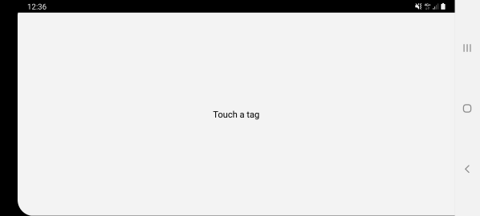
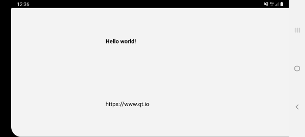
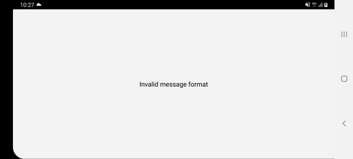

Annotated URL
Reads formatted NFC Data Exchange Format (NDEF) messages.
The Annotated URL example uses Qt NFC to display the contents of specifically formatted NFC Data Exchange Format (NDEF) messages read from an NFC Tag. The NDEF message should contain a URI record, an optional image/* MIME record, and one or more localized Text records.
This is the initial state of the example:

If a tag is touched, its NDEF content will be shown. Here is the UI for a tag that contains a text record and URI record:

When the screen is tapped, the URL will be opened in the browser.
AnnotatedUrl Class Definition
The AnnotatedUrl class wraps QNearFieldManager, the class providing the NFC Tag detection functionality. NDEF messages are read by QNearFieldManager and forwarded to a handler contained in the AnnotatedUrl class. After parsing the NDEF message the class emits the annotatedUrl() signal. The UI reacts to the signal displaying the contents of the NDEF message.
class AnnotatedUrl : public QObject { Q_OBJECT public: explicit AnnotatedUrl(QObject *parent = 0); ~AnnotatedUrl(); void startDetection(); signals: void annotatedUrl(const QUrl &url, const QString &title, const QPixmap &pixmap); void nfcStateChanged(bool enabled); void tagError(const QString &error); public slots: void targetDetected(QNearFieldTarget *target); void targetLost(QNearFieldTarget *target); void handleMessage(const QNdefMessage &message, QNearFieldTarget *target); void handlePolledNdefMessage(QNdefMessage message); void handleAdapterStateChange(QNearFieldManager::AdapterState state); private: QNearFieldManager *manager; QNdefFilter messageFilter; };
Note: The startDetection() method is used to defer the actual tag detection until all the connections between the UI and NFC-related logic are established. This is important when the application is automatically started once an NFC tag is touched. Such usecase is currently supported on Android.
int main(int argc, char *argv[]) { QApplication a(argc, argv); MainWindow mainWindow; AnnotatedUrl annotatedUrl; QObject::connect(&annotatedUrl, &AnnotatedUrl::annotatedUrl, &mainWindow, &MainWindow::displayAnnotatedUrl); QObject::connect(&annotatedUrl, &AnnotatedUrl::nfcStateChanged, &mainWindow, &MainWindow::nfcStateChanged); QObject::connect(&annotatedUrl, &AnnotatedUrl::tagError, &mainWindow, &MainWindow::showTagError); annotatedUrl.startDetection(); mainWindow.show(); return a.exec(); }
Message Filtering
As it is mentioned above, the application supports the NDEF messages of a specific format. A correct message should contain the following fields:
- At least one NDEF Text record, which will be used as a header.
- Exactly one NDEF URI record.
- An optional MIME record with an icon.
The order of the records is not strictly specified.
An instance of QNdefFilter is used to validate the NDEF message. The filter is populated as follows:
messageFilter.setOrderMatch(false);
messageFilter.appendRecord<QNdefNfcTextRecord>(1, 100);
messageFilter.appendRecord<QNdefNfcUriRecord>(1, 1);
messageFilter.appendRecord(QNdefRecord::Mime, "", 0, 1);
If the incoming message does not match the filter, an error message is shown:

Note: The NDEF Editor example application can be used to create the tags with correct or incorrect message structure.
AnnotatedUrl Handler Implementation
NFC messages read by the QNearFieldManager are forwarded to AnnotatedUrl::handleMessage.
void AnnotatedUrl::handleMessage(const QNdefMessage &message, QNearFieldTarget *target) {
At first the messages are validated using the QNdefFilter::match() method:
if (!messageFilter.match(message)) {
emit tagError("Invalid message format");
return;
}
If the messages have the correct format, the parsing continues.
Because NFC messages are composed of several NDEF records, looping through all of the records allows the extraction of the 3 parameters to be displayed in the UI: the Uri, the Title and the Pixmap:
for (const QNdefRecord &record : message) {
if (record.isRecordType<QNdefNfcTextRecord>()) {
QNdefNfcTextRecord textRecord(record);
title = textRecord.text();
QLocale locale(textRecord.locale());
} else if (record.isRecordType<QNdefNfcUriRecord>()) {
QNdefNfcUriRecord uriRecord(record);
url = uriRecord.uri();
} else if (record.typeNameFormat() == QNdefRecord::Mime &&
record.type().startsWith("image/")) {
pixmap = QPixmap::fromImage(QImage::fromData(record.payload()));
}
Finally after having extracted the parameters of the NFC message the corresponding signal is emitted so that the UI can handle it.
}
emit annotatedUrl(url, title, pixmap);
}
Adapter State Handling
On Android the adapter state changes can be detected by connecting to the QNearFieldManager::adapterStateChanged() signal. This allows stopping the detection when the NFC adapter is disabled, and restarting it when the adapter is enabled again. This approach is implemented in the AnnotatedUrl::handleAdapterStateChange slot.
void AnnotatedUrl::handleAdapterStateChange(QNearFieldManager::AdapterState state) { if (state == QNearFieldManager::AdapterState::Online) { startDetection(); } else if (state == QNearFieldManager::AdapterState::Offline) { manager->stopTargetDetection(); emit nfcStateChanged(false); } }
Automatic Application Startup
Android supports automatic application startup when the NDEF tag is touched. See Qt NFC on Android for the required changes to the Android manifest file.
Introduction of a custom AndroidManifest.xml requires special steps on the build system side.
Building with qmake
When using qmake, the following needs to be added to the .pro file:
android {
ANDROID_PACKAGE_SOURCE_DIR = $$PWD/android
DISTFILES += \
android/AndroidManifest.xml
}
Building with CMake
When using CMake, the following needs to be added to the CMakeLists.txt:
if(ANDROID)
set_property(TARGET annotatedurl
APPEND PROPERTY QT_ANDROID_PACKAGE_SOURCE_DIR
${CMAKE_CURRENT_SOURCE_DIR}/android
)
endif()
Running the Example
To run the example from Qt Creator, open the Welcome mode and select the example from Examples. For more information, visit Building and Running an Example.
See also Qt NFC.